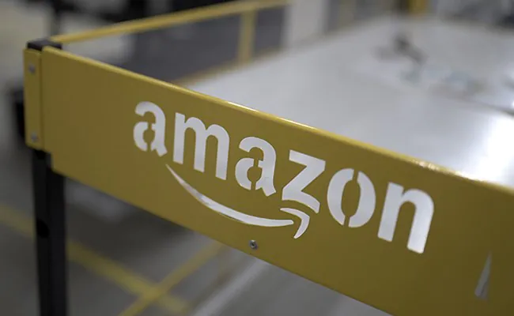

Date: September 01, 2023 07:48 AM IST
E-commerce major Amazon on Monday said it will make an initial investment of $3 million in nature-based projects in India. The allocation is part of the company's $15 million fund it has allocated for nature-based projects in Asia Pacific (APAC). "The first USD 3 million from the fund's APAC allocation will support nature-based projects in India. "For its first project, Amazon will be working with the Centre for Wildlife Studies (CWS) to support communities and conservation efforts in the Western Ghats, which is home to more than 30 per cent of all of India's wildlife species, including the world's largest population of wild Asiatic elephants and tigers," the company said in a statement. Amazon will provide $1 million to help CWS establish the "Wild Carbon" program, which will support 10,000 farmers in planting and maintaining one million fruit-bearing, timber and medicinal trees, according to the statement. "The Asia-Pacific region is home to vast forests and rich coastal environments, but it is also highly vulnerable to climate change, biodiversity loss and land degradation. "To protect the region from the impacts of climate change and preserve biodiversity, we will need both large-scale and local action – and we are committed to investing in both," Amazon's Global VP for Sustainability, Kara Hurst said. The $15 million allocation draws from Amazon's $100 million Right Now Climate Fund, which was created in 2019, to support nature conservation and restoration projects that enhance climate resilience and biodiversity, while driving social and environmental benefits in communities where they operate. "Amazon's support enables us to plan and build a program that is self-sustaining in the long-term. The farmers will receive upfront support to select tree types that serve both their livelihoods and the wildlife, whilst also receiving technical assistance, agroforestry training, and support for replanting failed saplings," CWS Executive Director Krithi Karanth said.